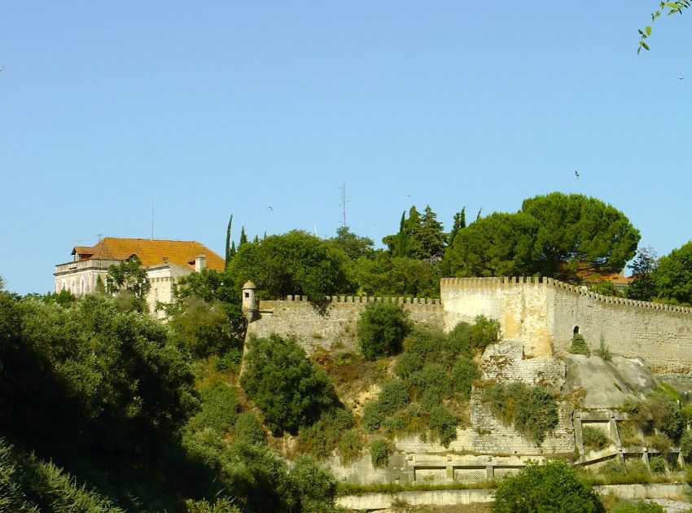
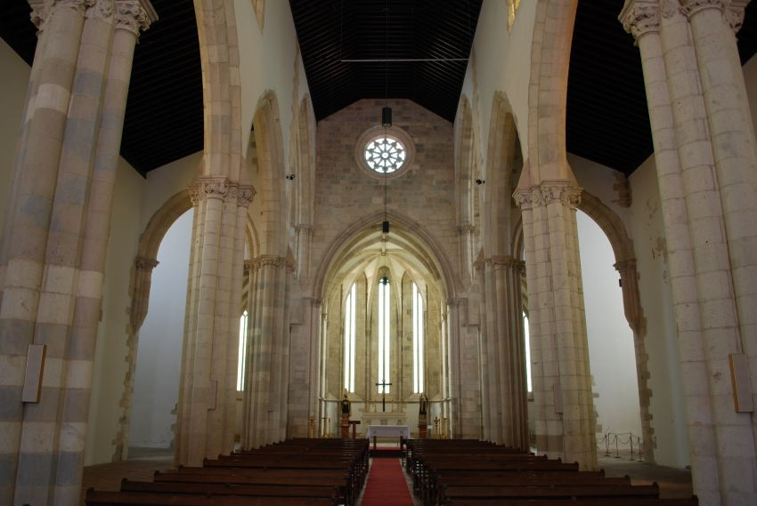
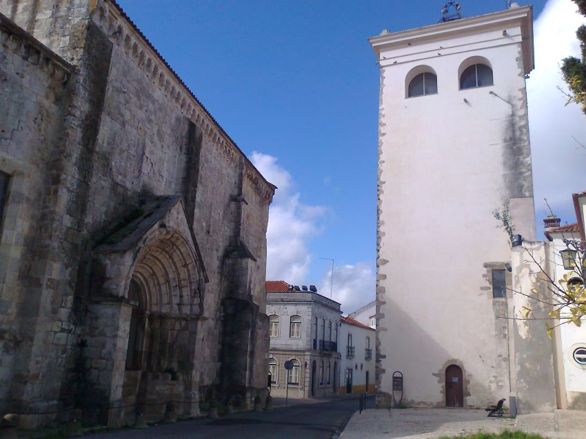

Sua próxima viagem:
Conheça Santarém
Foto: commons.wikimedia.org
Santarém, no coração do Ribatejo, é uma cidade histórica construída sobre um planalto com vistas incríveis para o rio Tejo.
Conhecida como a “capital do Gótico”, reúne igrejas e monumentos marcantes, um centro antigo charmoso e uma forte tradição gastronômica.
A pouco mais de uma hora de Lisboa, é um destino perfeito para quem gosta de história, cultura e passeios tranquilos.
Para os amantes de história
Descubra 3 destinos imperdíveis em Santarém
No coração do Ribatejo, Santarém combina vistas incríveis sobre o Tejo com um centro histórico cheio de surpresas.
Conhecida como a Capital do Gótico, a cidade guarda igrejas monumentais, ruas antigas com muito charme e miradouros perfeitos para fotos
especialmente ao fim da tarde.
Se você gosta de passeios com cultura, arquitetura e aquele clima de “cidade histórica portuguesa”, estes 3 lugares são paragem obrigatória.

Foto: commons.wikimedia.org
1.Jardim Portas do Sol
Um dos miradouros mais bonitos da região: um jardim amplo, calmo e com uma vista impressionante sobre o vale do Tejo.
Perfeito para caminhar, ver o pôr do sol e sentir a história do antigo “alto” de Santarém.

Foto: commons.wikimedia.org
2.Igreja da Graça
Um dos grandes símbolos do gótico em Santarém, com uma fachada marcante e um interior cheio de detalhes.
É uma visita obrigatória para quem curte arquitetura histórica e quer ver de perto um dos monumentos mais importantes da cidade.

Foto: commons.wikimedia.org
3.Torre das Cabaças
Passear pelo centro é como viajar no tempo: ruas estreitas, praças, igrejas e recantos fotogénicos.
A Torre das Cabaças (com o seu relógio) é um dos ícones locais e deixa o passeio ainda mais especial,
ideal para explorar com calma e sem pressa.